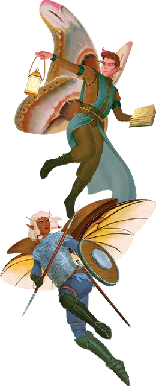

Фэйри
Fairy

Страна Фей является домом для многих народов, включая фэйри. Фэйри — это небольшой народ, но не настолько маленький как их друзья пикси или спрайты. Первые фэйри общались на Эльфийском, Гоблинском или Сильване, а их встречи с человеческими гостями побудили многих из них изучить Общий.
Пропитанные магией Страны Фей, большинство фэйри выглядят как Маленькие эльфы с крыльями насекомых, но у каждой фэйри есть физическая особенность, которая выделяет её среди других. Совершит бросок по таблице «Причуда фэйри» или выберите один из передоложенных вариантов, для определения вашей особенности. Вы также можете придумать свои собственные особенности, если ни один из приведенных ниже примеров не подходит вашему персонажу.
Характеристика фэйри
| к8 | Причуда |
| 1 | Ваши крылья похожи на птичьи. |
| 2 | У вас мерцающая разноцветная кожа. |
| 3 | У вас исключительно большие уши. |
| 4 | Вас постоянно окружает сверкающий туман. |
| 5 | У вас на голове маленький спектральный рог, похожий на рог единорога. |
| 6 | Ваши ноги похожи на ноги насекомого. |
| 7 | Вы пахнете свежими пирожными. |
| 8 | Вас окружает заметный, но безобидный холодок. |
Особенности фэйри
У вас есть следующие расовые особенности.
Увеличение характеристик. Либо значение одной характеристики по вашему выбору увеличивается на 2, а другой — на 1, либо значение трёх различных характеристик по вашему выбору увеличивается на 1.
Вид существа. Вы — Фея.
Размер. Ваш размер — Маленький.
Скорость. Ваша скорость ходьбы — 30 футов.
Магия фей. Начиная с 3-го уровня, вы можете накладывать заклинание огонь фей [faerie fire] с помощью этой особенности. Начиная 5-го уровня, вы также можете накладывать заклинание увеличение/уменьшение [enlarge/reduce] с помощью этой особенности. После накладывания одного из этих заклинаний с помощью особенности вы должны закончить продолжительный отдых, прежде чем сможете вновь наложить его таким образом. Вы также можете накладывать эти заклинания, используя любые имеющиеся у вас ячейки заклинаний подходящего уровня.
Кроме того, вы знаете заговор искусство друидов [druidcraft]. Интеллект, Мудрость или Харизма является вашей базовой характеристикой для этих заклинаний (выберите одну из них при выборе этой расы).
Полёт. Вы имеете крылья, которые дают вам скорость полёта равную вашей скорости ходьбы. Вы не можете использовать эту скорость полёта, если вы облачены в средние или тяжелые доспехи.
Языки. Ваш персонаж может говорить, читать и писать на Общем и ещё одном языке, который по вашему мнению подходит для персонажа.